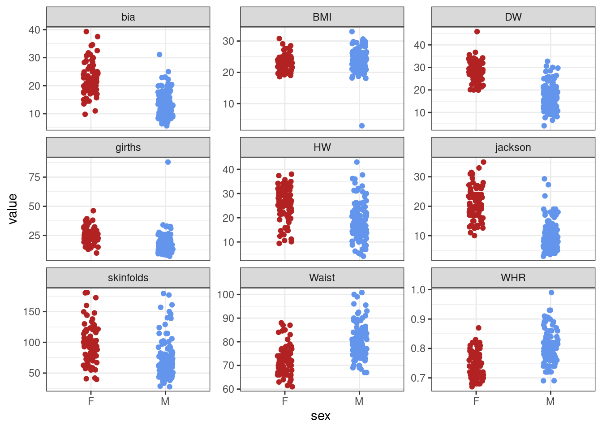
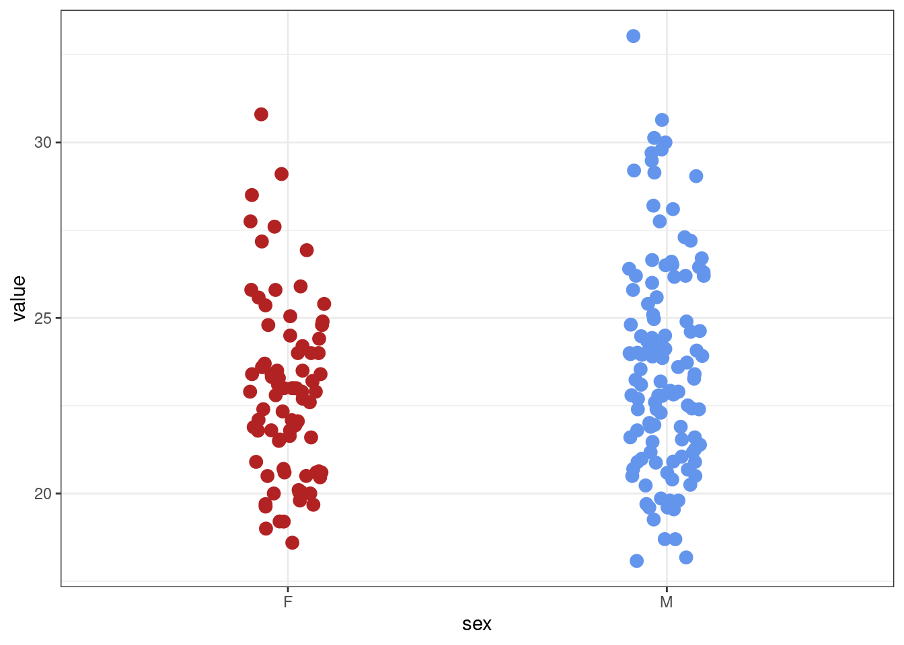

# data loading & plotting
library(tidyverse) # meta-package; loads several packages
# set theme for ggplot2 plotting
theme_set(theme_bw())
# bayesian modeling
library(cmdstanr)
# easier bayesian modeling
library(brms)
# plot bayesian models
library(bayesplot)Introduction
In programming it’s traditional that the first thing you learn to do in a new language is to print ‘Hello, World!’ to the screen. This is the first of three ‘Hello World’ posts that will walk through some data handling & analysis tasks. These will be a bit more complex than printing ‘Hello, World!’ but will provide a look at how to approach data loading, exploration, filtering, plotting and statistical testing. Each post will use a different language & in this first post we will use R - because it’s the language I know best (i.e. least worst). The next two posts will carry out the same tasks using python and julia. R and python are popular in data science and julia is a promising newcomer.
In each post we will load a dataset from a csv file, carry out some summarisation and exploratory plotting, some data filtering and finally carry out statistical testing on two groups using frequentist and Bayesian techniques. These are not exactly beginners posts but the aim is to give a flavour of how basic data exploration & analysis can be done in each language.
If you want to follow along the data are here.
Preliminaries
R has a lot of base functionality for data handling, exploration & statistical analysis; it’s what R was designed for. However we are going to make use of the ‘tidyverse’ (Wickham et al. 2019) because it has become a very popular approach to data handling & analysis in R.
The tidyverse encompasses the repeated tasks at the heart of every data science project: data import, tidying, manipulation, visualisation, and programming.
As well as data handling & visualisation we will also be carrying out some statistical testing. R is well served for basic frequentist statistics and there’s nothing extra we need. For Bayesian analysis we will use the Stan probabilistic programming language (Carpenter et al. 2017). We will code a model by hand and use the cmdstanr package to pass that model to Stan. We will also use the brms package (Bürkner 2017) which makes writing Stan models easier. Details on how to install the cmdstanr package and Stan are here (see the section on Installing CmdStan for how to install Stan). Note that brms also needs Stan to be installed. We load the packages we need in the code below.
Loading the data
These data are from body composition practicals run as part of the Sport & Exercise Science degree at the University of Stirling. They were collected over a number of years by the students who carried out various measures on themselves.
# load the data
data_in <- read_csv('data/BODY_COMPOSITION_DATA.csv')Rows: 203 Columns: 10
── Column specification ────────────────────────────────────────────────────────
Delimiter: ","
chr (1): sex
dbl (9): girths, bia, DW, jackson, HW, skinfolds, BMI, WHR, Waist
ℹ Use `spec()` to retrieve the full column specification for this data.
ℹ Specify the column types or set `show_col_types = FALSE` to quiet this message.Exploration & tidying
First we make sure the data looks as we expect it to.
# examine the data
glimpse(data_in)Rows: 203
Columns: 10
$ sex <chr> "M", "M", "M", "M", "M", "M", "M", "M", "M", "M", "M", "M", …
$ girths <dbl> 10.85, 14.12, 12.30, 8.50, 11.66, 15.65, 13.22, 14.62, 17.21…
$ bia <dbl> 5.7, 6.2, 6.3, 6.4, 6.6, 6.8, 6.9, 7.4, 7.6, 7.7, 7.8, 7.9, …
$ DW <dbl> 9.220, 11.800, 12.000, 10.850, 15.600, 21.420, 14.400, 9.820…
$ jackson <dbl> 4.75, 5.50, 5.50, 5.00, 12.00, 3.00, 7.80, 4.50, 9.00, 6.80,…
$ HW <dbl> 17.00, 16.90, 14.80, 10.20, 11.86, 33.10, 13.40, 14.35, 21.4…
$ skinfolds <dbl> 50.75, 46.30, 45.80, 43.55, 93.50, 49.75, 56.70, 39.70, 73.5…
$ BMI <dbl> 20.70, 21.90, 21.39, 19.26, 22.30, 20.23, 23.54, 21.18, 20.5…
$ WHR <dbl> 0.8000, 0.8100, 0.7300, 0.7400, 0.7800, 0.8500, 0.8700, 0.77…
$ Waist <dbl> 76.5, 75.0, 70.0, 68.5, 74.0, 73.0, 80.0, 76.0, 75.0, 76.7, …summary(data_in) # tells us about NA values sex girths bia DW
Length:203 Min. : 7.15 Min. : 5.70 Min. : 4.10
Class :character 1st Qu.:15.04 1st Qu.:11.90 1st Qu.:16.34
Mode :character Median :20.12 Median :16.20 Median :21.40
Mean :20.70 Mean :16.98 Mean :21.66
3rd Qu.:24.60 3rd Qu.:21.18 3rd Qu.:28.00
Max. :87.90 Max. :39.30 Max. :45.90
NA's :1
jackson HW skinfolds BMI
Min. : 3.00 Min. : 4.10 Min. : 27.75 Min. : 2.90
1st Qu.: 8.00 1st Qu.:15.04 1st Qu.: 59.27 1st Qu.:21.18
Median :12.80 Median :21.00 Median : 76.23 Median :23.00
Mean :14.23 Mean :21.42 Mean : 82.88 Mean :23.25
3rd Qu.:19.00 3rd Qu.:27.00 3rd Qu.:100.67 3rd Qu.:24.80
Max. :35.00 Max. :43.00 Max. :181.00 Max. :33.03
NA's :1
WHR Waist
Min. :0.6700 Min. : 61.00
1st Qu.:0.7400 1st Qu.: 72.25
Median :0.7800 Median : 76.00
Mean :0.7821 Mean : 76.84
3rd Qu.:0.8170 3rd Qu.: 81.00
Max. :0.9900 Max. :100.80
We should deal with the missing values before we do any further analysis. There are many ways to deal with missing values but here we will just drop rows with missing values from the data using the complete.cases() function.
# drop rows with NA values
data_in <- data_in[complete.cases(data_in), ]
summary(data_in) sex girths bia DW
Length:201 Min. : 7.15 Min. : 5.70 Min. : 4.10
Class :character 1st Qu.:15.08 1st Qu.:11.90 1st Qu.:16.30
Mode :character Median :20.12 Median :15.90 Median :21.40
Mean :20.73 Mean :16.98 Mean :21.61
3rd Qu.:24.40 3rd Qu.:21.20 3rd Qu.:28.00
Max. :87.90 Max. :39.30 Max. :45.90
jackson HW skinfolds BMI
Min. : 3.00 Min. : 4.10 Min. : 27.75 Min. : 2.90
1st Qu.: 8.00 1st Qu.:15.00 1st Qu.: 59.25 1st Qu.:21.17
Median :12.60 Median :21.00 Median : 76.23 Median :23.00
Mean :14.21 Mean :21.43 Mean : 82.68 Mean :23.22
3rd Qu.:19.00 3rd Qu.:27.00 3rd Qu.:100.35 3rd Qu.:24.80
Max. :35.00 Max. :43.00 Max. :181.00 Max. :33.03
WHR Waist
Min. :0.6700 Min. : 61.00
1st Qu.:0.7400 1st Qu.: 72.00
Median :0.7800 Median : 76.00
Mean :0.7815 Mean : 76.76
3rd Qu.:0.8150 3rd Qu.: 81.00
Max. :0.9900 Max. :100.80 According to the ‘tidy data’ philosophy (Wickham 2014) we want our data in long format rather than wide format. This also makes it easier to carry out later data wrangling, plotting and testing.
# wide to long data
data_inL <- pivot_longer(data_in, cols = `girths`:`Waist`, names_to = 'measure', values_to = 'value')
head(data_inL)# A tibble: 6 × 3
sex measure value
<chr> <chr> <dbl>
1 M girths 10.8
2 M bia 5.7
3 M DW 9.22
4 M jackson 4.75
5 M HW 17
6 M skinfolds 50.8 Now the values for each individual and each measurement technique are identified by rows rather than spread across row & column combinations. Exploration with plots is an essential step for checking values and the distribution of data. The tidyverse provides the ggplot2 package for this.
# custom colors for male & female
plot_cols <- c('firebrick', 'cornflowerblue')
# make the plot
ggplot(data_inL, aes(sex, value, colour = sex)) + geom_jitter(width = 0.1) +
scale_colour_manual(values = plot_cols) +
theme(legend.position = "none") +
facet_wrap(~measure, scales = "free_y")
There are a couple of mad values in the BMI and girths variables. For the rest of the analysis we’ll concentrate on the BMI variable. Removing outliers is a contentious subject but here a BMI of 2 is incompatible with life! So we’ll remove this unreasonably low value.
# get just bmi data
bmi_data <- data_inL %>% filter(measure == "BMI")
# remove low value
bmi_data <- bmi_data %>% filter(value > 15)
# check with a new plot
bmi_data %>% ggplot(aes(sex, value, colour = sex)) + geom_jitter(width = 0.1, size = 3) +
scale_colour_manual(values = plot_cols) +
theme(legend.position = "none") 
Much better!
Frequentist testing
Now let’s use a t-test to examine whether male and female BMI is different. In R basic statistical tests are easy; there are no extraneous packages to load and there’s a pretty simple ‘formula’ interface using the tilde (~). Note that by default R uses Welch’s t-test which does not assume equal variances in each group (see ?t.test).
# t-test
t.test(value ~ sex, data = bmi_data)
Welch Two Sample t-test
data: value by sex
t = -2.1134, df = 192.05, p-value = 0.03586
alternative hypothesis: true difference in means between group F and group M is not equal to 0
95 percent confidence interval:
-1.59338708 -0.05499779
sample estimates:
mean in group F mean in group M
22.83834 23.66253 The difference between male & female BMI is significant. This means that in a hypothetical long series of repeats of this study with different samples from the same population we would expect to see a difference as big or bigger between the sexes in more than 95% of those study repeats.
Bayesian testing
There are several packages for Bayesian statistics in R. We’ll use the cmdstanr package to write a Bayesian model in the Stan probabilistic programming language for assessing the difference between male and female BMI. Stan will do the heavy lifting for us (Markov Chain Monte Carlo (MCMC sampling)) and return a data object we can use in R.
# create data list
sex <- bmi_data %>% select(sex) %>% pull() # labels for participant sex
# convert to dummy coding; females are coded as 0
sex_dummy <- ifelse(sex == 'F', 0, 1)
# bmi values
bmi <- bmi_data %>% select(value) %>% pull()
# get num subjects
N <- nrow(bmi_data) # length of dataset
# make a list of data to pass to Stan
data_list <- list(N = N, sex = sex_dummy, bmi = bmi)
# define the model in Stan as a text string; can also pass in a separate .stan file
# stan code is written in blocks (data, parameters, model etc) defined by {}
model_string <- "
// data we want to model
data{
int<lower=1> N; // length of the data
vector[N] bmi; // bmi data of length N
vector[N] sex; // sex data of length N
}
// parameters we want to estimate
parameters{
real beta0; // intercept
real beta1; // slope
real<lower=0> sigma; // residual sd, must be positive
}
// priors for model
model{
// priors
beta0 ~ normal(25, 10); // intercept
beta1 ~ normal(0, 5); // slope
sigma ~ normal(0,100); // defined as positive only in parameters block
//likelihood
bmi ~ normal(beta0 + beta1*sex, sigma);
}"
# write file to temp dir
stan_mod_temp <- write_stan_file(model_string, dir = tempdir())
# create Stan model
stan_mod <- cmdstan_model(stan_mod_temp)
# fit the model using Stan
fit <- stan_mod$sample(data = data_list, seed = 123, chains = 4, parallel_chains = 2, refresh = 500 )Running MCMC with 4 chains, at most 2 in parallel...
Chain 1 Iteration: 1 / 2000 [ 0%] (Warmup)
Chain 1 Iteration: 500 / 2000 [ 25%] (Warmup)
Chain 1 Iteration: 1000 / 2000 [ 50%] (Warmup)
Chain 1 Iteration: 1001 / 2000 [ 50%] (Sampling)
Chain 1 Iteration: 1500 / 2000 [ 75%] (Sampling)
Chain 1 Iteration: 2000 / 2000 [100%] (Sampling)
Chain 2 Iteration: 1 / 2000 [ 0%] (Warmup)
Chain 2 Iteration: 500 / 2000 [ 25%] (Warmup)
Chain 2 Iteration: 1000 / 2000 [ 50%] (Warmup)
Chain 2 Iteration: 1001 / 2000 [ 50%] (Sampling)
Chain 2 Iteration: 1500 / 2000 [ 75%] (Sampling)
Chain 2 Iteration: 2000 / 2000 [100%] (Sampling)
Chain 1 finished in 0.0 seconds.
Chain 2 finished in 0.0 seconds.
Chain 3 Iteration: 1 / 2000 [ 0%] (Warmup)
Chain 3 Iteration: 500 / 2000 [ 25%] (Warmup)
Chain 3 Iteration: 1000 / 2000 [ 50%] (Warmup)
Chain 3 Iteration: 1001 / 2000 [ 50%] (Sampling)
Chain 3 Iteration: 1500 / 2000 [ 75%] (Sampling)
Chain 3 Iteration: 2000 / 2000 [100%] (Sampling)
Chain 4 Iteration: 1 / 2000 [ 0%] (Warmup)
Chain 4 Iteration: 500 / 2000 [ 25%] (Warmup)
Chain 4 Iteration: 1000 / 2000 [ 50%] (Warmup)
Chain 4 Iteration: 1001 / 2000 [ 50%] (Sampling)
Chain 4 Iteration: 1500 / 2000 [ 75%] (Sampling)
Chain 4 Iteration: 2000 / 2000 [100%] (Sampling)
Chain 3 finished in 0.0 seconds.
Chain 4 finished in 0.0 seconds.
All 4 chains finished successfully.
Mean chain execution time: 0.0 seconds.
Total execution time: 0.3 seconds.# summary plus diagnostics
fit$summary()# A tibble: 4 × 10
variable mean median sd mad q5 q95 rhat ess_bulk
<chr> <num> <num> <num> <num> <num> <num> <num> <num>
1 lp__ -306. -306. 1.19 0.980 -308. -305. 1.00 1899.
2 beta0 22.8 22.8 0.313 0.322 22.3 23.4 1.00 2021.
3 beta1 0.813 0.812 0.406 0.405 0.136 1.47 1.00 1965.
4 sigma 2.82 2.82 0.140 0.140 2.60 3.07 1.00 2856.
# ℹ 1 more variable: ess_tail <num># just the params
# fit$summary(c("beta0", "beta1", "sigma"), "mean", "sd")The output tells us that the estimated means for female BMI is 22.8 (females were dummy coded as 0). Given the priors we used we can say that there is a 90% probability that the value for female BMI lies between 22.3 and 23.4. The estimated male BMI is 0.81 (with 90% probability of being between 0.13 & 1.48) units greater than female BMI i.e. ~23.6. The mean values are the same as estimated by the frequentist \(t\)-test procedure.
To plot the posterior distributions we can extract the posterior draws and use the bayesplot package.
# get the draws; uses posterior package
draws <- fit$draws(variables = c('beta0', 'beta1', 'sigma'))
# plot the draws; bayesplot package
mcmc_dens(draws)Plotting the posterior distribution for the male BMI is as simple as adding together the draws for beta0 and beta1.
# draws to dataframe
draws_df <- as_draws_df(draws)
# posterior for male bmi included
bmi_posteriors <- draws_df %>% mutate(male_bmi_post = beta0 + beta1)
mcmc_dens(bmi_posteriors, pars = c('beta0', 'male_bmi_post', 'sigma'))There are easier ways to create basic (and more complex) Bayesian models than writing out the Stan code by hand. The brms package allows us to write Bayesian models using R modeling syntax. The model is translated to Stan and then compiled & run.
# brms bayesian modelling; same priors as above
brms_mod <- brm(value ~ sex, data = bmi_data,
prior = c(prior(normal(25, 10), class = "Intercept"), # prior on intercept
prior(normal(0, 5), class = "b", coef = 'sexM'), # prior on slope
prior(normal(0, 100), class = "sigma")), # prior on resid var
iter = 3000, warmup = 500, chains = 4, seed = 1234)Compiling Stan program...Start sampling
SAMPLING FOR MODEL '38af6dc35b245825a290a54ed93cd989' NOW (CHAIN 1).
Chain 1:
Chain 1: Gradient evaluation took 7e-06 seconds
Chain 1: 1000 transitions using 10 leapfrog steps per transition would take 0.07 seconds.
Chain 1: Adjust your expectations accordingly!
Chain 1:
Chain 1:
Chain 1: Iteration: 1 / 3000 [ 0%] (Warmup)
Chain 1: Iteration: 300 / 3000 [ 10%] (Warmup)
Chain 1: Iteration: 501 / 3000 [ 16%] (Sampling)
Chain 1: Iteration: 800 / 3000 [ 26%] (Sampling)
Chain 1: Iteration: 1100 / 3000 [ 36%] (Sampling)
Chain 1: Iteration: 1400 / 3000 [ 46%] (Sampling)
Chain 1: Iteration: 1700 / 3000 [ 56%] (Sampling)
Chain 1: Iteration: 2000 / 3000 [ 66%] (Sampling)
Chain 1: Iteration: 2300 / 3000 [ 76%] (Sampling)
Chain 1: Iteration: 2600 / 3000 [ 86%] (Sampling)
Chain 1: Iteration: 2900 / 3000 [ 96%] (Sampling)
Chain 1: Iteration: 3000 / 3000 [100%] (Sampling)
Chain 1:
Chain 1: Elapsed Time: 0.005785 seconds (Warm-up)
Chain 1: 0.020606 seconds (Sampling)
Chain 1: 0.026391 seconds (Total)
Chain 1:
SAMPLING FOR MODEL '38af6dc35b245825a290a54ed93cd989' NOW (CHAIN 2).
Chain 2:
Chain 2: Gradient evaluation took 3e-06 seconds
Chain 2: 1000 transitions using 10 leapfrog steps per transition would take 0.03 seconds.
Chain 2: Adjust your expectations accordingly!
Chain 2:
Chain 2:
Chain 2: Iteration: 1 / 3000 [ 0%] (Warmup)
Chain 2: Iteration: 300 / 3000 [ 10%] (Warmup)
Chain 2: Iteration: 501 / 3000 [ 16%] (Sampling)
Chain 2: Iteration: 800 / 3000 [ 26%] (Sampling)
Chain 2: Iteration: 1100 / 3000 [ 36%] (Sampling)
Chain 2: Iteration: 1400 / 3000 [ 46%] (Sampling)
Chain 2: Iteration: 1700 / 3000 [ 56%] (Sampling)
Chain 2: Iteration: 2000 / 3000 [ 66%] (Sampling)
Chain 2: Iteration: 2300 / 3000 [ 76%] (Sampling)
Chain 2: Iteration: 2600 / 3000 [ 86%] (Sampling)
Chain 2: Iteration: 2900 / 3000 [ 96%] (Sampling)
Chain 2: Iteration: 3000 / 3000 [100%] (Sampling)
Chain 2:
Chain 2: Elapsed Time: 0.005628 seconds (Warm-up)
Chain 2: 0.020249 seconds (Sampling)
Chain 2: 0.025877 seconds (Total)
Chain 2:
SAMPLING FOR MODEL '38af6dc35b245825a290a54ed93cd989' NOW (CHAIN 3).
Chain 3:
Chain 3: Gradient evaluation took 2e-06 seconds
Chain 3: 1000 transitions using 10 leapfrog steps per transition would take 0.02 seconds.
Chain 3: Adjust your expectations accordingly!
Chain 3:
Chain 3:
Chain 3: Iteration: 1 / 3000 [ 0%] (Warmup)
Chain 3: Iteration: 300 / 3000 [ 10%] (Warmup)
Chain 3: Iteration: 501 / 3000 [ 16%] (Sampling)
Chain 3: Iteration: 800 / 3000 [ 26%] (Sampling)
Chain 3: Iteration: 1100 / 3000 [ 36%] (Sampling)
Chain 3: Iteration: 1400 / 3000 [ 46%] (Sampling)
Chain 3: Iteration: 1700 / 3000 [ 56%] (Sampling)
Chain 3: Iteration: 2000 / 3000 [ 66%] (Sampling)
Chain 3: Iteration: 2300 / 3000 [ 76%] (Sampling)
Chain 3: Iteration: 2600 / 3000 [ 86%] (Sampling)
Chain 3: Iteration: 2900 / 3000 [ 96%] (Sampling)
Chain 3: Iteration: 3000 / 3000 [100%] (Sampling)
Chain 3:
Chain 3: Elapsed Time: 0.005748 seconds (Warm-up)
Chain 3: 0.018951 seconds (Sampling)
Chain 3: 0.024699 seconds (Total)
Chain 3:
SAMPLING FOR MODEL '38af6dc35b245825a290a54ed93cd989' NOW (CHAIN 4).
Chain 4:
Chain 4: Gradient evaluation took 2e-06 seconds
Chain 4: 1000 transitions using 10 leapfrog steps per transition would take 0.02 seconds.
Chain 4: Adjust your expectations accordingly!
Chain 4:
Chain 4:
Chain 4: Iteration: 1 / 3000 [ 0%] (Warmup)
Chain 4: Iteration: 300 / 3000 [ 10%] (Warmup)
Chain 4: Iteration: 501 / 3000 [ 16%] (Sampling)
Chain 4: Iteration: 800 / 3000 [ 26%] (Sampling)
Chain 4: Iteration: 1100 / 3000 [ 36%] (Sampling)
Chain 4: Iteration: 1400 / 3000 [ 46%] (Sampling)
Chain 4: Iteration: 1700 / 3000 [ 56%] (Sampling)
Chain 4: Iteration: 2000 / 3000 [ 66%] (Sampling)
Chain 4: Iteration: 2300 / 3000 [ 76%] (Sampling)
Chain 4: Iteration: 2600 / 3000 [ 86%] (Sampling)
Chain 4: Iteration: 2900 / 3000 [ 96%] (Sampling)
Chain 4: Iteration: 3000 / 3000 [100%] (Sampling)
Chain 4:
Chain 4: Elapsed Time: 0.005496 seconds (Warm-up)
Chain 4: 0.021491 seconds (Sampling)
Chain 4: 0.026987 seconds (Total)
Chain 4: # model summary
summary(brms_mod) Family: gaussian
Links: mu = identity; sigma = identity
Formula: value ~ sex
Data: bmi_data (Number of observations: 200)
Draws: 4 chains, each with iter = 3000; warmup = 500; thin = 1;
total post-warmup draws = 10000
Population-Level Effects:
Estimate Est.Error l-95% CI u-95% CI Rhat Bulk_ESS Tail_ESS
Intercept 22.84 0.31 22.22 23.46 1.00 9382 7692
sexM 0.82 0.41 0.01 1.63 1.00 10240 7126
Family Specific Parameters:
Estimate Est.Error l-95% CI u-95% CI Rhat Bulk_ESS Tail_ESS
sigma 2.82 0.14 2.56 3.12 1.00 9313 7484
Draws were sampled using sampling(NUTS). For each parameter, Bulk_ESS
and Tail_ESS are effective sample size measures, and Rhat is the potential
scale reduction factor on split chains (at convergence, Rhat = 1).The values for each coefficient are the same as both the frequentist model and the handcoded Stan model (as we’d expect).
Plotting the model can be done with the mcmc_plot() function in brms.
# plot the draws using built-in brms functions (that calls bayesplot)
# regex = TRUE for regular expression (^b) to pull out beta coefficients
mcmc_plot(brms_mod, variable = c('^b', 'sigma'), type = 'dens', regex = TRUE)An even easier (but less flexible) package is rstanarm.
Summary
This post has been a quick skip through some data loading, exploration, filtering and both frequentist & Bayesian modelling in R.
References
Bürkner, Paul-Christian. 2017. “Brms: An R Package for Bayesian Multilevel Models Using Stan.” Journal of Statistical Software 80 (1): 1–28. https://doi.org/10.18637/jss.v080.i01.
Carpenter, Bob, Andrew Gelman, Matthew D. Hoffman, Daniel Lee, Ben Goodrich, Michael Betancourt, Marcus Brubaker, Jiqiang Guo, Peter Li, and Allen Riddell. 2017. “Stan: A Probabilistic Programming Language.” Journal of Statistical Software 76 (1): 1–32. https://doi.org/10.18637/jss.v076.i01.
Wickham, Hadley. 2014. “Tidy Data.” Journal of Statistical Software 59 (1): 1–23. https://doi.org/10.18637/jss.v059.i10.
Wickham, Hadley, Mara Averick, Jennifer Bryan, Winston Chang, Lucy McGowan, Romain François, Garrett Grolemund, et al. 2019. “Welcome to the Tidyverse.” Journal of Open Source Software, November. https://doi.org/10.21105/joss.01686.